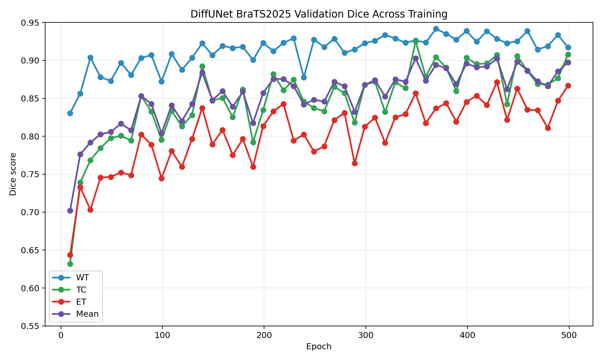
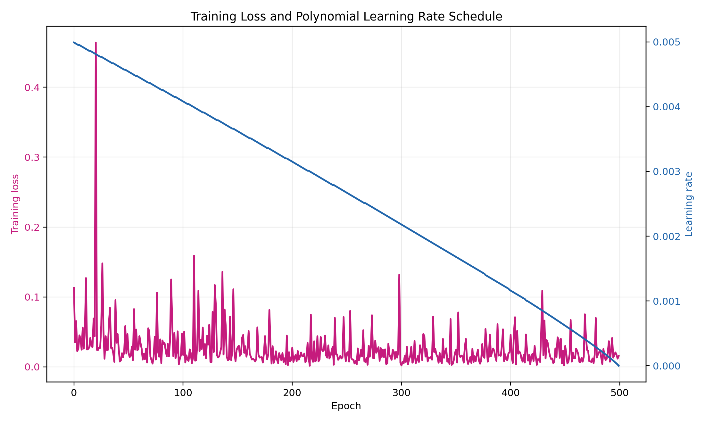
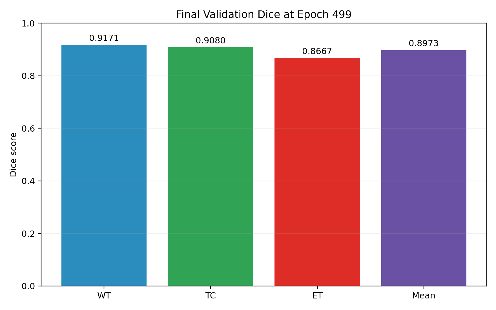
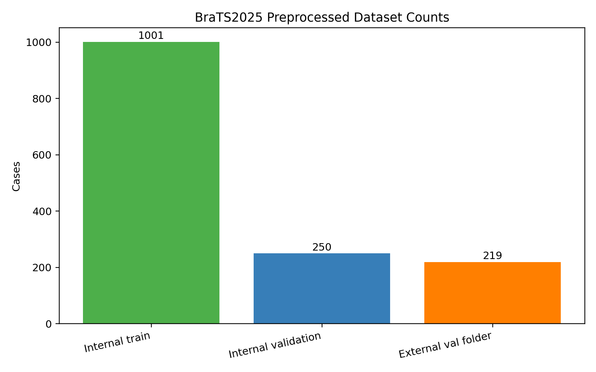
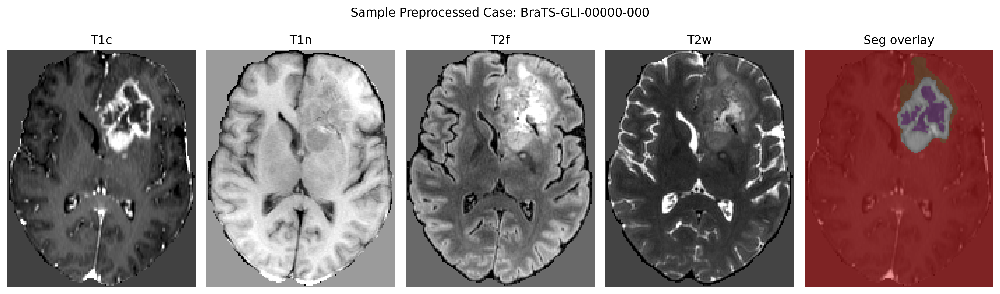
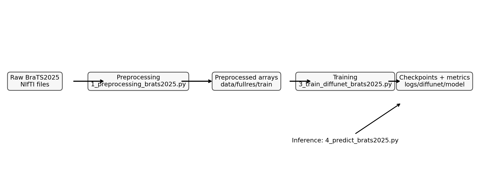

Final epoch: 499 Final mean Dice: 0.8973
Best logged epoch: 349 Best mean Dice: 0.9027



| Split | Count |
|---|---|
| train_fullres_npz_total | 1251 |
| internal_train_after_test_list | 1001 |
| internal_validation_test_list | 250 |
| external_val_fullres_npz | 219 |


